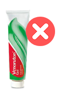

Dzień dobry. Dzisiaj chcę porozmawiać o żylakach. Coraz więcej kobiet przychodzi do mnie z prośbą o pomoc w ukrywaniu żylaków na nogach. Byłam bardzo zainteresowana tematem żylaków i postanowiłam uzyskać najwięcej informacji na temat tego problemu. Przede wszystkim byłam zdumiona jego skalą. Ostatnie badania na Uniwersytecie w Edynburgu wykazały, że ponad 67% kobiet w krajach UE cierpi na żylaki.
Kiedy dowiedziałam się o tej liczbie, byłam zszokowana! Ponad połowa kobiet w Europie - to już prawdziwa epidemia.
Kto jest bardziej podatny na żylaki?
Żylaki najczęściej występują u kobiet. Jednak ostatnio dolegliwość zaczyna wpływać też na mężczyzn. Dane nie dotyczą mężczyzn-sportowców predysponowanych do żylaków. Ilu mężczyzn cierpi na żylaki? Około 24%!
- ekspert kosmetolog Anna Hart
Wśród najważniejszych czynników powstawania żylaków nazywane są prace "stojąca", nadwaga i mało aktywny tryb życia.
Objawy żylaków
Najlepszą strategią jest rozpoznawanie i działanie na czas. Zdecydowałam się przeprowadzić badanie dotyczące najbardziej wyraźnych i powszechnych objawów żylaków. Rozmawiałem z kilkoma flebologami i uruchomiłam ankietę.
Najczęstsze objawy, nie licząc zewnętrznych objawów, to:
- - mrowienie
- - drętwienie nóg
- - pulsujący lub palący ból kończyn
- - skurcze mięśni
Osobiste doświadczenie
Bardzo często kobiety zwracają uwagę na zdrowie nóg tylko wtedy, gdy żyły na nogach są już w opłakanym stanie. Objawy takie jak skurcze i drętwienie nóg, które przyjmują po zwykłym zmęczeniu po pracowitym dniu.
Kolejnym dużym problemem jest to, że kobiety nie w pełni rozumieją powagę sytuacji. Jeśli żylna siatka pojawi się na nogach, zakładają spodnie. Ukrywają więc tę "kosmetyczną" wadę, zapominając o poważnych skutkach żylaków.
Żylaki to nie tylko brzydkie żyły, niebieskie paski i siatka na nogach. Ignorowanie tego problemu jest niemożliwe. Jeśli zaniedbasz żylaki, będzie to bardzo bolesne nie tylko dla nóg, ale także dla całego ciała. Może dojść do zakrzepicy.
Nowy lek na żylaki
Miałam okazję porozmawiać z kobietą, która wypełniła moją ankietę dotyczącą objawów żylaków. Powiedziała, że brała udział w testowaniu nowego środka przeciwżylakowego .
Krem był superskuteczny. U niej minęły bóle i skurcze w nogach, a już pod koniec testów minęły też obrzęki w żyłach. Zniknęły zarówno zewnętrzne, jak i wewnętrzne objawy żylaków.
Podpisała umowę o nieujawnianiu i dlatego była w stanie opowiedzieć tę historię zaledwie dwa miesiące po zakończeniu testów.
Nowy środek okazał się bardziej skuteczny niż wiele znanych marek.
| Badanie przeprowadzone na Uniwersytecie w Edynburgu: |

Venoruton |

|
| Jednoczesny efekt | Łagodzi ból | Łagodzi ból i obrzęk |
| Efekty uboczne | Podrażnienia, alergie, swędzenie | Brak efektów ubocznych |
| Przeciwwskazania | Nadwrażliwość na składniki leku | Brak przeciwwskazań |
| Tryb działania | Łagodzi podrażnienia | Tonizuje i oczyszcza ścianki naczyń krwionośnych |
| Efekt długoterminowy | zmniejsza przekrwienie i znieczula | Poprawia krążenie krwi |
Krem działa całkowicie, a nie tylko eliminuje ból, jak większość konkurentów. Pomaga wyeliminować przyczynę żylaków.
Pomógł już ponad tysiącom kobiet w całej Europie. Krem stał się doskonałą alternatywą dla drogich zabiegów chirurgicznych.
Zaznaczę, że nie warto być obojętnym, jeśli ma się jeden lub kilka objawów z tej listy. Żylaki są poważnym problemem.
Małgorzata Szymańska
Posted 8 hours ago
Tak było z moją siostrą. Gdy u niej się pojawiła siatka żylna, ona postanowiła ukryć to, chociaż mówiłam jej, że to trzeba leczyć. A kiedy zaczęły się obrzęki bóle w nogach, wtedy już się zastanowiła. Nosiła specjalne rajstopy, próbowała wszelkie maści. A pomógł jej tylko . Biega teraz, tak jak w młodości! Jej nogi są zdrowe i piękne! Bez żylaków!
Maria Kowal
Posted 9 hours ago
Proszę napisać, jak długo ona używała kremu ? Mam silne żylaki na nogach. Kupiłam specjalne tabletki na żyły i żel przeciwżylakowy. Używam przez tydzień, ale jeszcze nie zauważyłam żadnego efektu, żyły na nogach są tak samo niebieskie. Nogi bolą trochę mniej, i chyba obrzęki stały się mniejsze, ale nie ma, żeby wszystko całkiem przeszło. Nie mam pieniędzy na operację. I jeszcze jedno, na jakim etapie żylaków można stosować ? Mam mrowienie, skurcze i obrzęk żył. Z góry dziękuję za odpowiedź.
Małgorzata Szymańska
Posted 9 hours ago
Dzień dobry Mario! Siostra powiedziała, że krem szybko łagodzi ból. Proszę przeczytać na stronie internetowej, tu jest link. Właśnie tutaj zamawiałyśmy . Żadnych wątpliwości, że krem jest bardzo dobry. Polecam gorąco. Z pewnością pomoże nawet bez zażywania tabletek.
Barbara Jabłońska
Posted 10 hours ago
Tak! to bardzo dobry krem! Niedawno też myślałam, jak poradzić z żylakami. Bardzo bolały mnie nogi, a żyły były po prostu straszne. Myślałam już, żeby zgłosić się do flebologa, poddać się operacji. Ale mąż znalazł gdzieś krem i zaproponował, żebym najpierw spróbowała ten krem. Raz kozie śmierć, więc zaryzykowałam. I w końcu nie potrzebowałam operacji! Krem mi pomógł! Nie mogłam uwierzyć. Bałam się, że wszystko wróci i nogi znów będą boleć. A jednak nie! Wszystko w porządku!